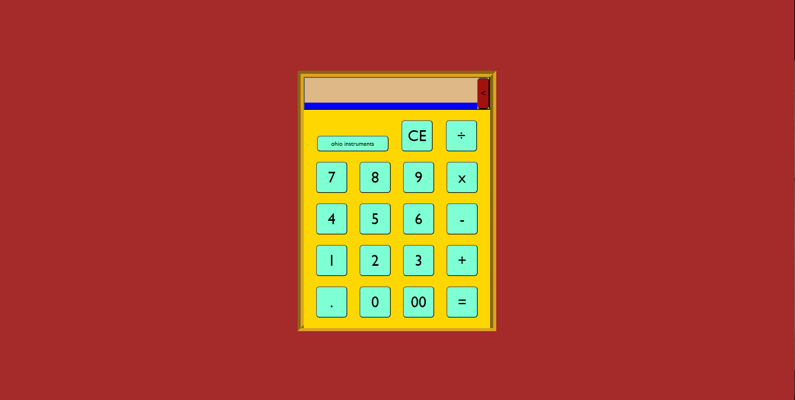
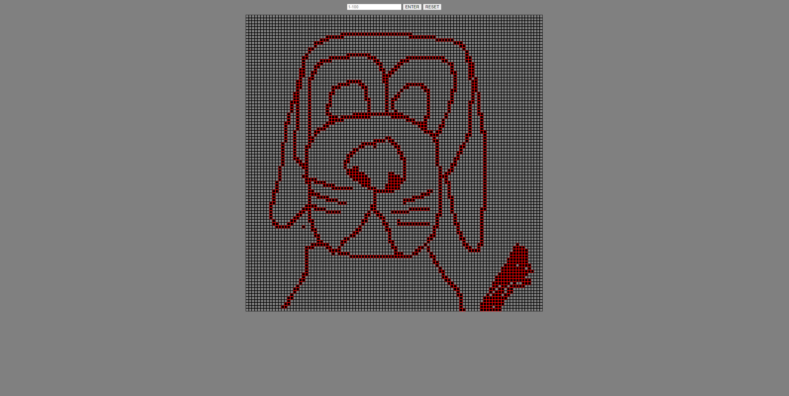
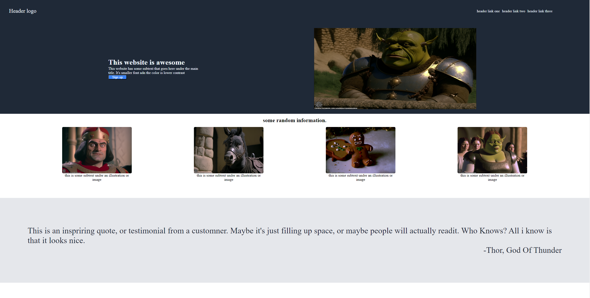
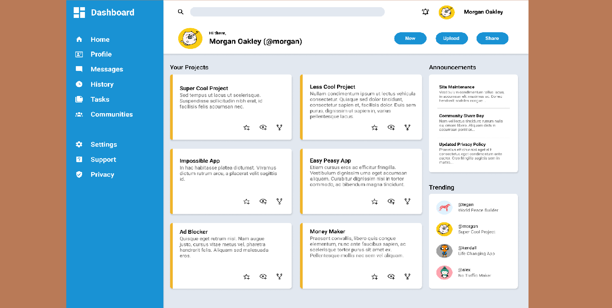

This project features a user-friendly sign-up form where visitors can easily create an account. It includes input fields for essential information such as name, email address, and password. The form ensures data validation and provides error messages for incorrect inputs, making the registration process smooth and secure.
Calculator

The calculator project offers a handy tool for performing basic arithmetic calculations. With a clean and intuitive interface, users can input numbers, choose operators, and obtain accurate results instantly. It supports addition, subtraction, multiplication, and division, empowering users to quickly and efficiently carry out operations.
Etch-a-Sketch

The Etch-a-Sketch project brings a classic drawing toy to the digital realm. Users can use their mouse or touch input to create artistic sketches on a virtual canvas. With options to change colors, brush sizes, and even erase mistakes, it provides an enjoyable and interactive drawing experience reminiscent of the nostalgic toy.
Rock Paper Scissors
This project recreates the popular game of Rock Paper Scissors in a digital format. Users can play against the computer or challenge a friend. The game interface displays the iconic hand gestures for rock, paper, and scissors, and keeps track of the score. It offers a fun and competitive gaming experience for users of all ages
Landing Page

The landing page project serves as an attractive introduction to a product, service, or website. It captures visitors' attention with captivating visuals and persuasive content, encouraging them to explore further. It effectively communicates the main features and benefits, guiding users towards taking desired actions such as signing up or making a purchase.
Dash Board

The dashboard project serves as a centralized hub for your other projects. It provides an overview of each project with relevant information, such as a screenshot and a brief description. Users can easily navigate to the individual project pages from the dashboard, enabling seamless access and management of all your projects in one place.
 Mitch Conner
Mitch Conner